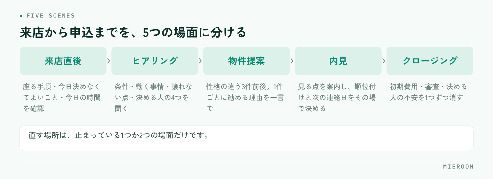

来店はあるのに申込が増えないとき、原因は担当者の話し方ではなく接客の流れのどこかに決まっていない場面があることです。接客を5つの場面に分け、どこで落ちているかを特定すれば、直す場所は1つか2つに絞られます。この記事では、来店から申込までの流れを場面ごとに分解し、店舗で決めておくことを順に整理します。
この記事の結論
成約率は、接客全体をうまくすることでは上がりません。5つの場面のどこで落ちているかを先に特定し、その場面だけを決め直すのが最短です。落ちている場面は、来店から申込までの記録を並べれば見えてきます。
賃貸仲介の成約率は、接客の流れを場面で分けると見えてくる
成約率が上がらないという相談のとき、店舗でまず出てくるのは「決め切る力が弱い」という話です。けれども、申込に至らなかった接客を並べていくと、最後の押しで落ちているケースはそれほど多くありません。多いのは、ヒアリングで条件を聞き切っていない、提案した物件が条件から外れている、内見で次に進む約束をしていない、といった途中の場面です。

接客を5つの場面に分けると、落ちている場所が特定できます。来店直後、ヒアリング、物件提案、内見、クロージング。この順番で、それぞれ「次の場面へ進んだか」を記録すると、どこで止まっているかが数えられます。
| 場面 | 止まっているサイン | 直す対象 |
|---|---|---|
| 来店直後 | 座ってからの会話が続かない | 最初の3分の進め方 |
| ヒアリング | 提案した物件を断られる理由がばらばら | 聞く項目の抜け |
| 物件提案 | 内見まで進まない | 提案の件数と理由の伝え方 |
| 内見 | 内見したのに連絡が途絶える | 内見後の約束の取り方 |
| クロージング | 検討しますで終わる | 不安の残り方と手続きの説明 |
全部を直そうとすると何も変わりません。先に数えて、1つか2つに絞ってください。
来店直後の3分で、相談しやすい状態をつくる
来店直後の目的は、物件を見せることではありません。この人に話していいと思ってもらうことです。ここが固いまま進むと、ヒアリングで本当の条件が出てきません。
決めておくことは3つです。1つ目は座る場所と飲み物を出すまでの手順。迷わず案内できる形にしておきます。2つ目は最初に伝える内容で、「今日お部屋が決まらなくても大丈夫です」「まずご希望を伺ってから、ご紹介できるものをお出しします」と、この場で決める必要はないことを先に伝えます。3つ目は今日の時間の確認です。「このあとのご予定はどのくらい余裕がありますか」と聞いておけば、内見まで進めるかどうかがその時点で分かります。
反響から来店した人の場合は、問い合わせのあった物件の状況を先に伝えてください。すでに申込が入っているなら、座ってすぐに言う。後回しにすると、その後の提案が全部言い訳のように聞こえます。
ヒアリングは、聞く項目を決めて抜けを防ぐ
提案が外れる原因は、ほとんどがヒアリングの抜けです。経験のある担当者は頭の中に項目を持っていますが、新人は持っていません。そこで、店舗として聞く項目を一覧にしておく必要があります。
聞く内容は大きく4つに分かれます。条件（エリア、賃料の上限、間取り、入居の希望時期）、事情（転勤・進学・同棲・更新のタイミングなど、なぜ動くのか）、譲れない点と譲れる点、そして決める人（本人だけで決められるのか、家族や会社の承認が必要か）。このうち抜けやすいのは事情と決める人です。急いでいるのか様子を見ているのかで、提案の出し方が変わります。
| 聞く内容 | 抜けたときに起きること |
|---|---|
| 賃料の上限と初期費用の考え方 | 提案が予算から外れ、やり直しになる |
| 入居の希望時期 | 空室の時期が合わず、内見が無駄になる |
| 動く事情 | 急ぎ具合が分からず、追客の間隔を外す |
| 譲れない点 | 条件を広げた提案が全部断られる |
| 決める人 | 本人が納得しても申込に進まない |
項目の作り方は来店時のヒアリング項目で詳しく整理しています。
物件提案は、件数と「勧める理由」を決めておく
提案で起きがちなのは、条件に合うものを全部見せてしまうことです。数が多いと比べきれず、お客様は決められません。逆に1件だけだと、それが合わなかった時点で接客が終わります。
店舗で決めるのは2つです。1つは出す件数の目安で、3件前後に絞り、それぞれ性格の違うものを混ぜます。条件にぴったりのもの、賃料が少し安い代わりに何かを譲るもの、少し高い代わりに希望を満たすもの。選ぶ軸を見せるのが目的です。もう1つは、1件ごとに勧める理由を一言で言えるようにしておくこと。「ご希望の駅から2駅ですが、徒歩が短くなります」のように、ヒアリングで聞いた内容とつなげます。
断られたときは、理由を聞いて記録してください。断りの理由が集まると、ヒアリングのどこが抜けていたかが分かります。物件の紹介文の書き方は物件紹介文の書き方にまとめています。
内見では、終わり方を先に決めておく
内見まで進んだのに連絡が途絶えるのは、内見の終わり方を決めていないからです。見終わって「ご検討ください」と別れると、その後は追いかける仕事になります。
内見の前に、順番と所要時間を伝えます。何件を何時までに回るか、戻ってから店で話す時間があるか。これを先に言っておくと、戻って話す流れが自然に作れます。各物件では、見るべき点を案内してください。日当たりと窓の向き、水回りの状態、収納の広さ、共用部の管理の様子、周辺の夜の雰囲気。お客様は見るべき場所が分からないので、案内しないと印象だけが残ります。
終わり方として決めておくのは3つです。良かった順に順位を付けてもらう、気になる点をその場で全部出してもらう、そして次に連絡する日と内容を約束する。「明日の夕方までに、ご質問のあった管理会社の確認結果をお送りします」のように次の接点を具体的にするところまでを内見の工程に入れます。内見前の準備は内見の準備と案内で整理しています。
クロージングで不安を消し、よくある失敗を仕組みで防ぐ
残っている不安を1つずつ消す
「検討します」で終わる接客は、押しが弱いのではなく、不安が残ったままです。その不安が何かを聞かないまま押すと、連絡が取れなくなります。
残りやすい不安は決まっています。初期費用の総額がはっきりしない、審査に通るか分からない、同居人や家族の了解が取れていない、他に良い物件が出るかもしれない、手続きの流れが分からない。これを1つずつ確認して、答えられるものはその場で答え、確認が必要なものはいつまでに返すかを約束する。
初期費用は、口頭ではなく書いたものを渡してください。項目ごとの内訳と、支払う時期が分かる形です。審査は、どこが見るのか、どのくらいで結果が出るのかを説明します。内訳の説明の仕方は初期費用の内訳の説明にまとめています。
申込に進むときは、次に必要なものを紙かメッセージで渡します。必要書類、記入してもらう内容、入金の時期。ここが口頭だけだと、書類が揃わずに時間が空き、その間に気持ちが変わります。
よくある失敗と、その避け方
接客の良し悪しを感覚で評価する…どの場面で落ちたかを記録していないと、直す場所が決まりません。場面ごとに進んだかどうかだけ残してください。
ヒアリング項目が担当者の頭の中にある…新人が同じ接客をできません。一覧にして、来店票に印刷します。
提案件数を決めていない…多すぎると比べられず、少なすぎると終わります。性格の違う3件前後に絞ります。
内見後の約束をしていない…追客が追いかける仕事になります。次の連絡日と内容をその場で決めます。
断られた理由を記録していない…同じ外れ方を繰り返します。断りの理由は、ヒアリングの改善材料です。
記録は、細かく書く必要はありません。場面ごとに進んだかと、断られた理由を一言。これだけで、翌月に見直す材料になります。
自分で進める場合と、ツールに任せる場合の分かれ目
一般論として、判断の基準は3つあります。
一つ目は、接客の記録が残っているかどうかです。来店から申込までの経過が担当者の記憶とメモだけにあるなら、どの場面で落ちているかを数えられません。紙の来店票でも構いませんが、集計して見返すところまでやるなら、記録と集計が同じ場所にある形のほうが続きます。
二つ目は、担当者の人数です。1〜2人なら、朝礼で状況を共有すれば足ります。人数が増え、反響の受付と接客の担当が分かれてくると、聞いた内容が引き継がれないことが起き始めます。そこが起きてからが、仕組みを入れる時期です。
三つ目は、見直しの頻度です。月に一度でも場面ごとの数を見て決め直す習慣があるなら、形式は何でも機能します。逆に、集計に手間がかかって数か月見ていないなら、集計を自動で出す形にしないと習慣は戻りません。
迷う場合は、まず1か月だけ手で数えてみてください。どの場面で落ちているかが分かれば、仕組みを入れるべき範囲も自然に決まります。
よくある質問
場面ごとの記録は、何を残せばいいですか？
新人の接客を、どこから教えるべきですか？
内見の件数は、多いほうがいいのでしょうか？
「検討します」と言われたとき、その場で何を聞けばいいですか？
店舗全体の成約率を見るだけでは足りませんか？
まとめ：成約率は、落ちている場面を特定してから直す
接客の流れを5つの場面に分けると、やることが決まります。来店直後は相談しやすい状態をつくり、ヒアリングは項目を一覧にして抜けを防ぐ。提案は性格の違う3件前後に絞り、1件ごとに勧める理由を言えるようにする。内見は終わり方と次の連絡を先に決める。クロージングでは残っている不安を1つずつ消す。そして、場面ごとに進んだかどうかを記録して、月に一度数える。
逆に、接客全体をうまくしようとすると、何も変わりません。落ちている場面は店舗ごとに違い、直す場所は1つか2つしかないからです。
ミエルームなら、反響の受付から来店、ヒアリングの内容、提案した物件、内見、申込までが案件ごとに1件のままつながって残るので、どの場面で止まったかを数える作業が記録の副産物になります。接客・反響成績の可視化で担当者ごとの違いも見えるため、朝礼で感覚を話し合う時間が、場面を特定して決め直す時間に変わります。機能の詳細はミエルームの製品トップをご覧ください。資料のご請求やデモアカウントの発行は、この下のボタンからお気軽にどうぞ。